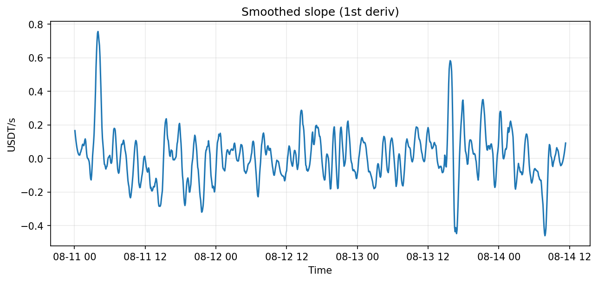
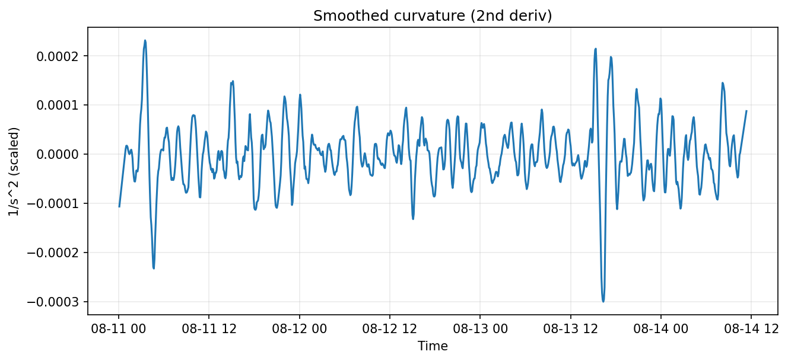
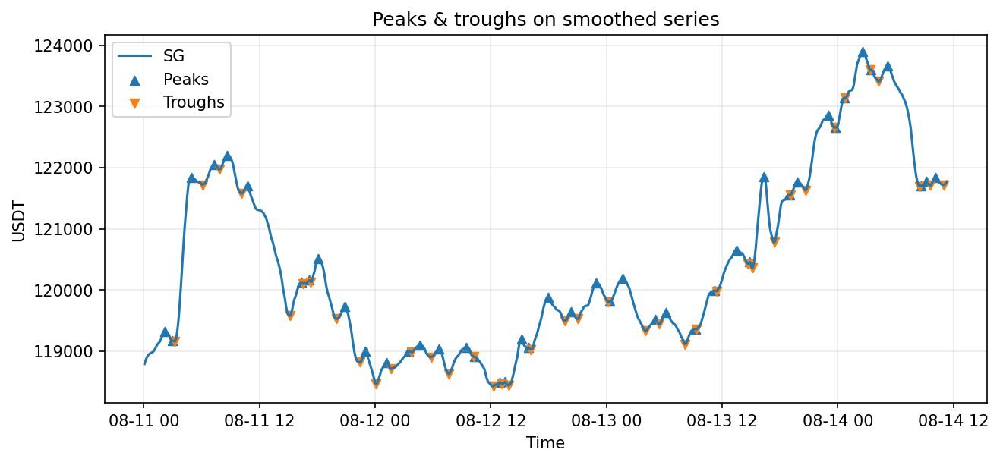

Surfing the Spikes: Signal Processing for Crypto Peaks & Troughs
Applying Savitzky–Golay filtering and curvature analysis to detect meaningful turning points in noisy BTC price data.
What this post is actually about
This analysis is not about markets. It is about what can and cannot be inferred from finite, noisy trajectories in any dynamical system—whether molecular simulations, sensor streams, or price data. The choice of BTC is a sandbox, not the subject.
Baseline Discipline
Before applying any sophisticated method, we establish three reference levels:
- Naive baseline: raw signal extrema (no smoothing)
- Engineered baseline: fixed Savitzky–Golay window
- Inferred structure: scale-robust extrema detection
This hierarchy lets us distinguish true signal from noise artifacts and understand what we're actually improving upon.
Raw vs Smoothed

Slope
Curvature
Detected Peaks & Troughs
Decision Quantity
Given a finite trajectory, how stable is the timing and ordering of detected transitions under perturbations of the smoothing scale?
Failure mode: False peaks appear/disappear with small window changes (non-robust). Robustness region: Peaks persist across a window range (scale-invariant extrema). For sufficiently short trajectories, peak detection becomes non-identifiable regardless of smoothing; this is a data limit, not a modelling failure.
Notebook & code: GitHub